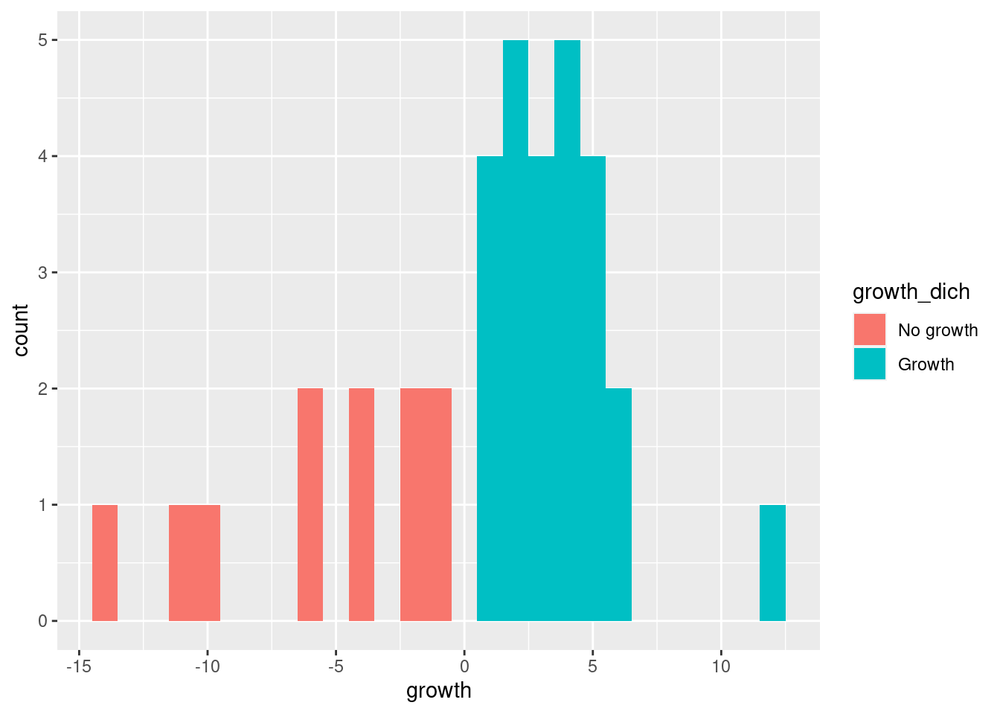
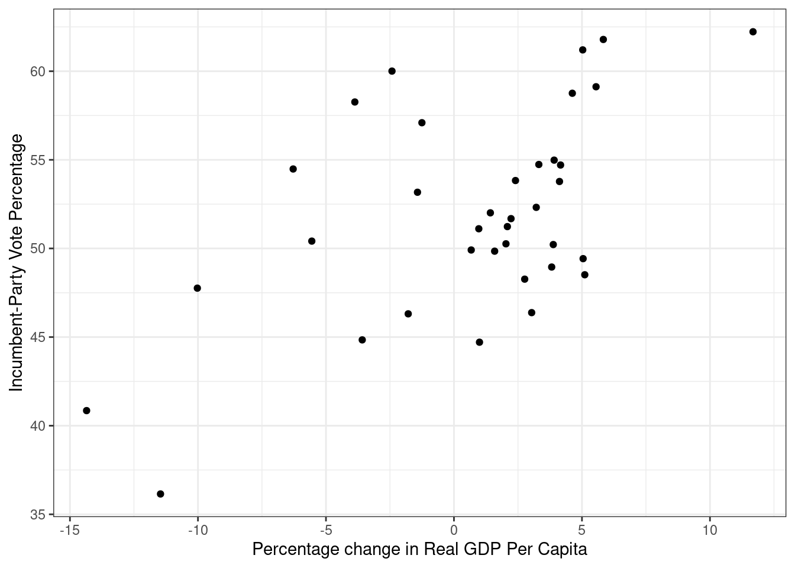
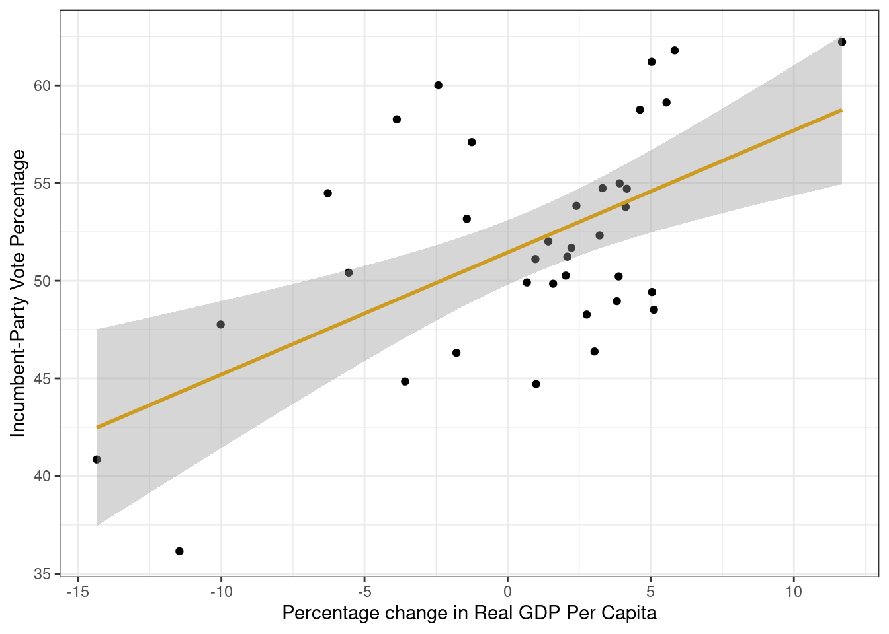
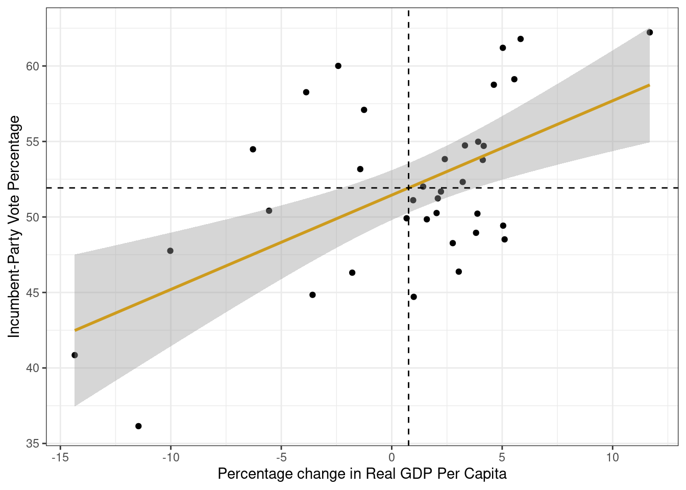
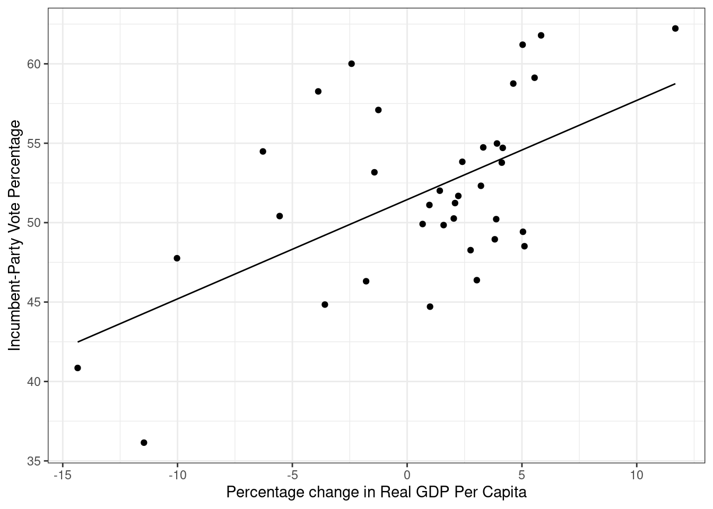
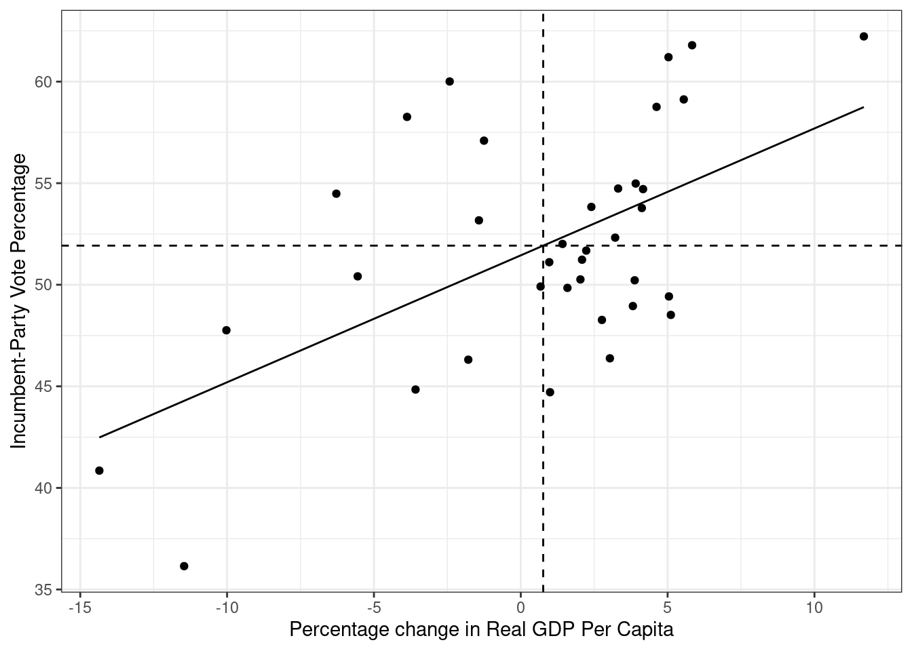

# Laster inn pakker
library(tidyverse)
library(stargazer)
# Laster inn datasettet
# Bytt ut det som står mellom "" til å passe din filbane:
load("../data/FairFPSR3.RData")Seminar 5 – Bivariat regresjon
I dag skal vi se på fem ting:
- Laste inn data (repetisjon)
- Omkoding av variabler (repetisjon)
- Plotting (repetisjon)
- Kjøre en regresjonsmodell med en uavhengig variabel (nytt)
- Tolkning og fremstilling av regresjonsresultater (nytt)
Datasettet vi skal bruke er det samme som det som omtales i kapittel ni i The Fundamentals of Political Science Research. I likhet med kapittel ni så skal vi kjøre en regresjon der vi ser på effekten av økonomisk vekst (growth) på andel stemmer partiet til den sittende kandidaten får (inc_vote). Det første vi skal gjøre er å laste inn pakker og laste inn datasettet:
Vi bruker load() for å laste inn data fordi datasettet er i .Rdata-format.
Undersøker data
Når vi skal kjøre en regresjonsanalyse så er noe av det første vi gjør å undersøke datasettet:
# Et alternativ til str()
glimpse(FairFPSR3)Rows: 36
Columns: 5
$ inc_vote <dbl> 48.516, 50.220, 49.846, 50.414, 48.268, 47.760, 53.171, 60.0…
$ year <dbl> 1876, 1880, 1884, 1888, 1892, 1896, 1900, 1904, 1908, 1912, …
$ inflation <dbl> NA, 1.974, 1.055, 0.604, 2.274, 3.410, 2.548, 1.442, 1.879, …
$ goodnews <dbl> NA, 9, 2, 3, 7, 6, 7, 5, 8, 8, 3, 0, 10, 7, 4, 9, 8, 0, 0, 7…
$ growth <dbl> 5.110, 3.879, 1.589, -5.553, 2.763, -10.024, -1.425, -2.421,…# Printer variabelnavnene
names(FairFPSR3)[1] "inc_vote" "year" "inflation" "goodnews" "growth" # Henter ut oppsummerende statistikk:
summary(FairFPSR3) inc_vote year inflation goodnews
Min. :36.15 Min. :1876 Min. :0.000 Min. : 0.000
1st Qu.:48.84 1st Qu.:1911 1st Qu.:1.431 1st Qu.: 3.000
Median :51.46 Median :1946 Median :2.141 Median : 5.000
Mean :51.93 Mean :1946 Mean :2.567 Mean : 5.057
3rd Qu.:54.80 3rd Qu.:1981 3rd Qu.:3.139 3rd Qu.: 7.000
Max. :62.23 Max. :2016 Max. :7.795 Max. :10.000
NA's :1 NA's :1
growth
Min. :-14.3500
1st Qu.: -1.5155
Median : 2.1575
Mean : 0.7635
3rd Qu.: 3.9653
Max. : 11.6820
Det er også lurt å sjekke om mange observasjoner har manglende informasjon (missing) på variablene du er interessert i:
# Sjekker hvor mange observasjoner som vi har informasjon på alle variablene om:
table(complete.cases(FairFPSR3))
FALSE TRUE
1 35 Vi ser at 35 av observasjonene våre ikke har noen missingverdier. Vi kan også sjekke for enkeltvariabler:
# Sjekker hvor mange observasjoner som har missing på variabelen inflation
table(is.na(FairFPSR3$inflation))
FALSE TRUE
35 1 Vi ser at en observasjon har missing på variabelen inflation.
Legg merke til at funksjonene complete.cases() og is.na() er logiske tester. Disse evaluerer hver observasjon og sjekker om vi har informasjon om alle variabler (complete.cases()) og om vi mangler informasjon på variabelen inflation. For å illustrere dette så kan vi prøve å legge til to nye variabler i datasettet basert på disse logiske testene:
FairFPSR3 <- FairFPSR3 %>%
mutate(complete = complete.cases(.),
inf_na = is.na(inflation))Bruk View() eller klikk på datasettet ditt for å se hvordan de nye variablene ser ut. Hva betyr TRUE og FALSE i de to kolonnene?
Mer informasjon om missingverdier finner dere i dokumentet som beskriver seminar 4.
Omkoding av variabler
Etter at vi har kartlagt datastrukturen og hvilke variabler vi har så må vi vurdere om noen av variablene må omkodes før vi kan gjøre analysen vår. For å få samme resultater som i kapittel ni trenger vi ikke å omkode noe, men for å få noe å sammenligne med skal vi lage en dikotom variabel.
I tidyverse bruker man som regel mutate()sammen med andre funksjoner for å opprette nye variabler. Koden over hvor vi opprettet variabler for de logiske testene complete.cases() og is.na() er eksempler på dette. Nå skal vi også kombinere mutate() med ifelse() for å lage en dikotom variabel som tar verdien Growth om observasjonen er et år med positiv økonomisk vekst og No growth om observasjonen er et år uten økonomisk vekst:
# Oppretter den nye variabelen og endrer referansekategori
FairFPSR3 <- FairFPSR3 %>%
mutate(growth_dich = ifelse(growth > 0, "Growth", "No growth"),
growth_dich = factor(growth_dich, levels = c("No growth", "Growth")))Hvordan ifelse() fungerer er nærmere beskrivet i seminar 3. Det neste vi gjør er å sjekke om omkodingen ble riktig:
# Sjekker at det ser ok ut:
class(FairFPSR3$growth_dich)[1] "factor"table(FairFPSR3$growth_dich, useNA = "always")
No growth Growth <NA>
11 25 0 Når du lager en faktor-variabel så tar R utgangspunkt i alfabetet når referansekategorien bestemmes. I dette tilfellet ville referansekateogrien blitt “Growth”, men vi bruker factor() til å endre referansekategorien til “No growth”.
Når en omkoder numeriske variabler så kan det være nyttig å lage et plott for å sjekke at det ble riktig. Her bruker vi fill argumentet til å gi ulik farge til observasjonene basert på om det var vekst eller ikke:
ggplot(data = FairFPSR3) +
geom_histogram(aes(x = growth, fill = growth_dich),
binwidth = 1)
Ut fra plottet kan vi se at alle observasjonene med verdien No growth hadde negativ vekstrate, mens alle observasjoner med verdien Growth hadde positiv vekstrate. Hva ville dere gjort med plottet før det evt kan brukes i en oppgave?
Litt plotting før regresjon
Før du kjører en regresjon så kan det være lurt å plotte den avhengige og den uavhengige variabelen din. I vårt tilfelle er dette variabelene inc_vote og growth. For å få til dette bruker vi ggplot.
ggplot(data = FairFPSR3) +
geom_point(aes(x = growth, y = inc_vote)) +
theme_bw() +
labs(y = "Incumbent-Party Vote Percentage",
x = "Percentage change in Real GDP Per Capita")
Regresjon med numerisk uavhengig variabel
For å kjøre en lineær regresjon i R så bruker vi funksjonen lm(). lm() har følgende syntaks:
lm(avhengig_variabel ~ uavhengig_variabel, data = mitt_datasett)
# På mac får du ~ med alt + k + space
# På win får du ~ med Alt Gr + ^
# ^ er knappen til venstre for toppen av enter på de fleste tastaturDersom datasettet ditt har manglende informasjon (missing/NA) så må du legge til et element som sier hvordan regresjonen skal forholde seg til dette. Ved å legge til na.action = "na.exclude" i lm() så beholder R informasjon om hvilke observasjoner som mangler data slik at vi kan bruke fitted() som vi skal snakke mer om senere.
I eksempelet fra kapittel ni i Kellsted og Whitten er vi interessert i effekten av den uavengige variabelen growth på den avhengige variabelen inc_vote. Under kjører vi modellen og lagrer den som model i Environment:
model <- lm(inc_vote ~ growth,
data = FairFPSR3,
na.action = "na.exclude")Det finnes flere måter å undersøke resultatene på. Vi skal se på hvordan vi kan gjøre dette ved hjelp av summary(), stargazer() og ggplot(). Vi skal først se på summary().
summary(model)
Call:
lm(formula = inc_vote ~ growth, data = FairFPSR3, na.action = "na.exclude")
Residuals:
Min 1Q Median 3Q Max
-8.1384 -3.7445 -0.6354 2.8291 10.0700
Coefficients:
Estimate Std. Error t value Pr(>|t|)
(Intercept) 51.4486 0.8133 63.256 < 2e-16 ***
growth 0.6248 0.1550 4.032 0.000295 ***
---
Signif. codes: 0 '***' 0.001 '**' 0.01 '*' 0.05 '.' 0.1 ' ' 1
Residual standard error: 4.828 on 34 degrees of freedom
Multiple R-squared: 0.3235, Adjusted R-squared: 0.3036
F-statistic: 16.26 on 1 and 34 DF, p-value: 0.0002955Ved å bruke summary får vi informasjon om koeffisienten (Estimate), standardfeilen (Std. Error), t-verdien (t-value) og p-verdien (Pr(>|t|)). Av summary kan vi derfor lese at koeffisienten til growth er 0.6248 og p-verdien er 0.000295. P-verdien er lavere enn 0.01 og vi kan derfor si at koeffisienten er signifikant på 1 prosents nivå.
stargazer() er en nyttig funksjon som gir oss mye av den samme informasjonen som summary(), men i et litt mer lettlest format.
stargazer(model,
type = "text")
===============================================
Dependent variable:
---------------------------
inc_vote
-----------------------------------------------
growth 0.625***
(0.155)
Constant 51.449***
(0.813)
-----------------------------------------------
Observations 36
R2 0.323
Adjusted R2 0.304
Residual Std. Error 4.828 (df = 34)
F Statistic 16.256*** (df = 1; 34)
===============================================
Note: *p<0.1; **p<0.05; ***p<0.01Ved hjelp av stargazer så kan vi også lagre tabeller lokalt på PC-en som vi kan bruke i word-dokumenter og liknende. Da endrer vi på type argumentet og legger til et out argument. out argumentet forteller i hvilken mappe du vil lagre filen samt hva filen skal hete. Da får du en .htm-fil som ser omtrent ut som i eksempelet under. Den kan du høyreklikke på og velge åpne i word dersom du skal ha tabellen inn i en oppgave eller liknende:
stargazer(model,
type = "html",
out = "model1_tab.htm")Informasjonen vi får ved hjelp av summary() og stargazer() er veldig nyttig.Vi får vite koeffisientene, standardfeilene og informasjon vi kan bruke til å evaluere modellen vår. I seminar skal vi bruke en del tid på å tolke disse tabellene.
Et alternativ til tabeller er å plotte resultatene fra regresjonen. Nå skal vi lage figur 9.4 i kapittel ni ved hjelp av ggplot().
Først lager vi et plott med de observerte verdiene (dette er det samme plottet som vi lagde tidligere):
ggplot(data = FairFPSR3) +
geom_point(aes(x = growth, y = inc_vote)) +
theme_bw() +
labs(y = "Incumbent-Party Vote Percentage",
x = "Percentage change in Real GDP Per Capita")Det neste vi skal gjøre er å legge til regresjonslinjen i plottet. Dette kan gjøres på to måter.
Legge til regresjonslinje med geom_smooth
Den første måten er å bruke geom_smooth(method = "lm") for å plotte en regresjonslinje:
ggplot(data = FairFPSR3) +
geom_point(aes(x = growth, y = inc_vote)) +
theme_bw() +
labs(y = "Incumbent-Party Vote Percentage",
x = "Percentage change in Real GDP Per Capita") +
geom_smooth(aes(x = growth, y = inc_vote),
method = "lm", color = "goldenrod3")`geom_smooth()` using formula = 'y ~ x'
I kapittel ni viser Kellstedt og Whitten at regresjonslinjen krysser utvalgets gjennomsnittsverdier på uavhengig og avhengig variabel. Det kan vi også vise ved å legge til to linjer i koden vår:
ggplot(data = FairFPSR3) +
geom_point(aes(x = growth, y = inc_vote)) +
theme_bw() +
labs(y = "Incumbent-Party Vote Percentage",
x = "Percentage change in Real GDP Per Capita") +
geom_smooth(aes(x = growth, y = inc_vote),
method = "lm", color = "goldenrod3") +
geom_hline(yintercept = mean(FairFPSR3$inc_vote), linetype = "dashed") +
geom_vline(xintercept = mean(FairFPSR3$growth), linetype = "dashed")`geom_smooth()` using formula = 'y ~ x'
Legge til regresjonslinje med fitted() og geom_line()
Den andre metoden er å be R løse regresjonslikningen for alle observasjonene våre og så legge til et nytt lag med predikerte verdier i plottet. Denne metoden går vi ikke gjennom i detalj på seminar så det holder i massevis å kunne den første.
R kan regne ut de predikerte verdiene for oss ved hjelp av funksjonen fitted() så vi slipper heldigvis å gjøre det for hånd.
Her bruker vi funksjonene fitted() og resid() til å legge til predikerte verdier og residualer for de ulike variablene i datasettet vårt:
FairFPSR3 <- FairFPSR3 %>%
mutate(fitted = fitted(model),
residuals = resid(model))Nå kan vi bruke denne informasjonen til å legge til en regresjonslinje i plottet vårt. Prikkene angir de ulike observerte verdikominasjonene, mens den rette linjen gir oss den lineære sammenhengen fra modellen vår.
ggplot(data = FairFPSR3) +
geom_point(aes(x = growth, y = inc_vote)) +
geom_line(aes(x = growth, y = fitted)) +
theme_bw() +
labs(y = "Incumbent-Party Vote Percentage",
x = "Percentage change in Real GDP Per Capita")
Også her kan vi vise at regresjonslinjen krysser utvalgets gjennomsnittsverdier på uavhengig og avhengig variabel. Vi legger til de to linjene geom_hline() og geom_vline():
ggplot(data = FairFPSR3) +
geom_point(aes(x = growth, y = inc_vote)) +
theme_bw() +
labs(y = "Incumbent-Party Vote Percentage",
x = "Percentage change in Real GDP Per Capita") +
geom_line(aes(x = growth, y = fitted)) +
geom_hline(yintercept = mean(FairFPSR3$inc_vote), linetype = "dashed") +
geom_vline(xintercept = mean(FairFPSR3$growth), linetype = "dashed")
Konfidensintervall
I kapittel ni i Kellstedt og Whitten er det flere eksempler på hvordan vi kan sjekke om en modell er god eller ikke. Noe av det gikk vi gjennom når vi så på resultatene av modellen. En ting som ikke kommer med når vi bruker stargazer() og summary() er konfidensintervallene til en koeffisient. De kan vi enkelt hente ut ved hjelp av funksjonen confint():
confint(model) 2.5 % 97.5 %
(Intercept) 49.7957308 53.1015677
growth 0.3098843 0.9397437Regresjon med dikotom uavhengig variabel
For å øve oss på tolkning skal vi nå kjøre en modell med inc_vote som avhengig variabel og den dikotome vekst-variabelen vi lagde tidligere som uavhengig variabel. At en variabel er dikotom betyr at den bare har to verdier. Først kjører vi modellen før vi undersøker resultatene i stargazer:
# Lagrer modellen
model_dich <- lm(inc_vote ~ growth_dich,
data = FairFPSR3,
na.action = "na.exclude")
# Undersøker resultatene
stargazer(model_dich,
type = "text")
===============================================
Dependent variable:
---------------------------
inc_vote
-----------------------------------------------
growth_dichGrowth 2.859
(2.066)
Constant 49.940***
(1.722)
-----------------------------------------------
Observations 36
R2 0.053
Adjusted R2 0.025
Residual Std. Error 5.711 (df = 34)
F Statistic 1.914 (df = 1; 34)
===============================================
Note: *p<0.1; **p<0.05; ***p<0.01